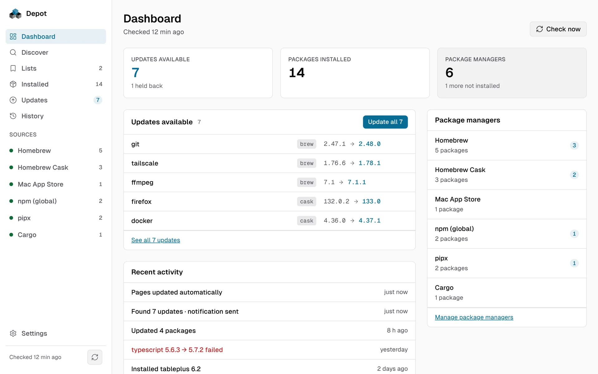

The whole machine at a glance
The Dashboard shows updates available, packages installed, package managers found and recent activity. Updates are grouped by source: select all, only majors or one manager, pin, skip a version, or read the release notes in place.
